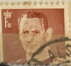
| SOURCE | TITLE| IMAGE MATCH | click to source page |
| Stampedia | stampedia GERMAN DEMOCRATIC REPUBLIC STAMP catalog | 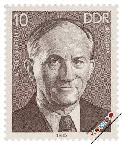 |
| eBay | 1960 Frédéric Joliot-Curie,physicist,NOBEL Prize/chemistry,Hungary,1714,IMP.,MNH | eBay | 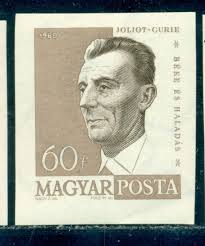 |
| The Philately | Bulgaria 1922 Mi 169 James David Bourchier Sc 173 for sale at The Philately | 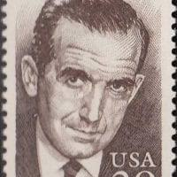 |
| lastdodo.com | Famous people 10 (1979) - GDR - LastDodo | 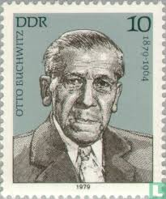 |
| Etsy | Five T.S. Eliot 22 Cent Vintage Unused Postage Stamps - Etsy | 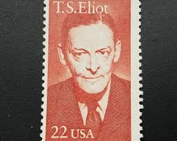 |
| Old-Stamps.com | Otto Buchwitz - 1879-1964 / DDR 1979 | 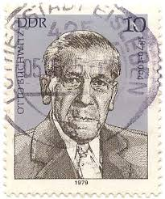 |
| Shutterstock | 3+ Hundred Bisters Royalty-Free Images, Stock Photos & Pictures | Shutterstock | 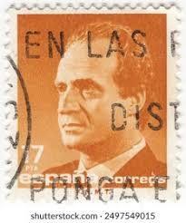 |
| stampphenom.com | Albania 1960 Ali Kelmendi (1900-1939), Kosovar Albanian communist lead – StampPhenom | 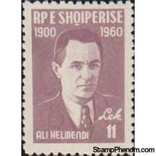 |
| eBay | 1964 Frédéric Joliot-Curie,French physicist,Nobel Prize/Chemistry,DDR,1049,MNH | eBay | 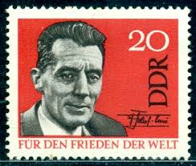 |
| eBay | 1967-68 IGA SERIES 1 # 22 JOHN FERGUSON INV J4407 | eBay | 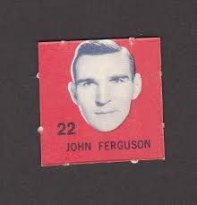 |
| HipStamp | Spain SC#2728 35 Pta King Juan Carlos I (1998) Used | Europe - Spain & Colonies, General Issue Stamp / HipStamp | 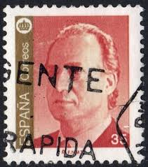 |
| eBay | Kongelig Post Danmark ~ King Frederik IX ~ 30 Brown Stamp ~ Posted ~ c.1945 ~ 01 | eBay | 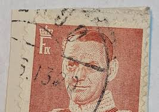 |
| FOREIGN VOLUNTEER LEGION | AXIS & FOREIGN LEGION MILITARIA | 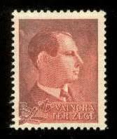 |
| Alamy | Antonin zapotocky 1884 1957 hi-res stock photography and images - Alamy | 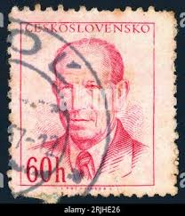 |
| Redbubble | Ole Munch and Dot Lyon baking - Fargo Season 5" Art Board Print for Sale by averagedogart | Redbubble | 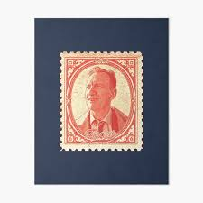 |
| Alamy | Postage stamp from East Germany (DDR) depicting Franz Dahlem, politician and leader of the East German Communist Party Stock Photo - Alamy | 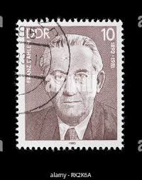 |
| eBay | 1930's Laurel and Hardy/Barton MacLane Film Stamp Pair Very Rare | eBay | 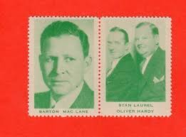 |
| lastdodo.com | Gyorgy Kilian 1 (1961) - Hungary - LastDodo | 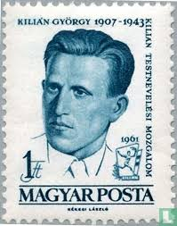 |
| The Philately | Hungary 1962 Mi 1817A Ferenc Berkes Sc 1435 for sale at The Philately | 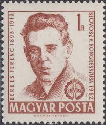 |
| First Day Covers Online | 3149 / 32c Glenn "Pop" Warner : Legendary Football Coach : Philadelphia, PA Postmark Fleetwood 1997 FDC - First Day Covers Online | 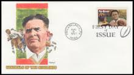 |
| Pngtree | Curie Background Images, HD Pictures and Wallpaper For Free Download | Pngtree | 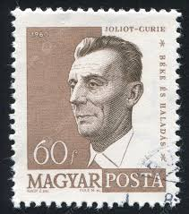 |
| eBay | Slim Summerville 1932 National Screen Star Stamp - Clean Back - E5 - Film Star | eBay | 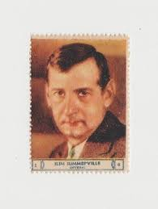 |
| lastdodo.com | King Baudouin (1980) - Belgium - LastDodo | 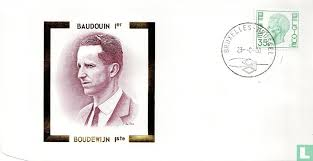 |
| eBay | Denmark - 1984 (813) Mint never Hinged | eBay | 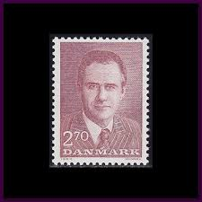 |
| Shutterstock | 1+ Hundred Novotny Royalty-Free Images, Stock Photos & Pictures | Shutterstock | 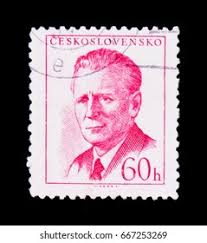 |
| Burda Auction | Postage stamps 1953-1992 / Czechoslovakia 1945-1992 / Philately / Public | Burda Auction | 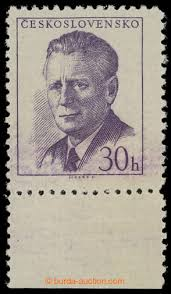 |
| Shutterstock | Denmark Circa 1967 Stamp Printed Denmark Stock Photo 83892010 | Shutterstock | 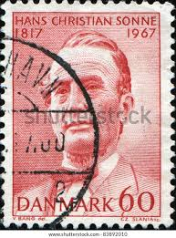 |
| eBay | 3 stamps : Wendell Willkie Statesman 75-Cent United States USA Postage Stamp NEW | eBay | 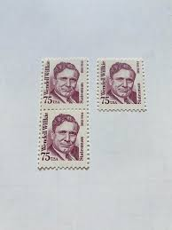 |
| eBay | France 1964 MNH Mi 1464 Rene Coty Last president of the Fourth French Republic | eBay | 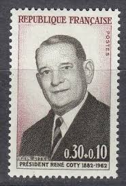 |
| Shutterstock | 36 Antonin Novotny Royalty-Free Images, Stock Photos & Pictures | Shutterstock | 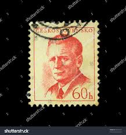 |
| eBay | Spain - 1985 - 1Pta - Definitive Issues - King Juan Carlos I - #18205 | eBay | 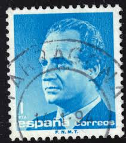 |
| eBay | DDR MNH ** 593-4 SC 362-3 Berthold Brecht 1957 | eBay | 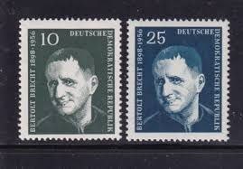 |
| lastdodo.com | Sándor Latinka 1 (1961) - Hungary - LastDodo | 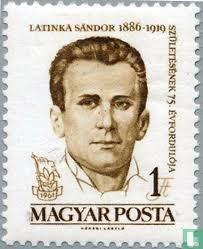 |
| ebid.net | Denmark 1950 King Frederik IX 20 Øre Used Stamp. on eBid United States | 190568034 | 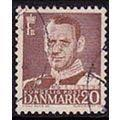 |
| eBay | 1997 First Day of Issue - Postage Stamp honoring - Pop Warner - Fleetwood | eBay | 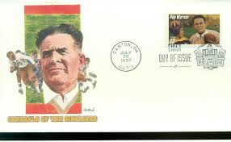 |
| eBay | Ceskoslovensko 1kcs Isverma Postage Stamp Gray | eBay | 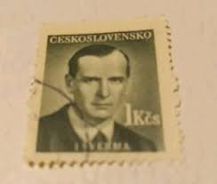 |
| Todocolección | brasil ** & visita del presidente de frança, ch - Buy Antique stamps of Brazil on todocoleccion | 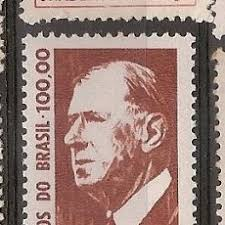 |
| Shutterstock | 19+ Thousand German Post Stamp Royalty-Free Images, Stock Photos & Pictures | Shutterstock | 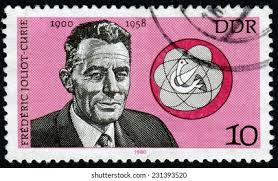 |
| eBay | BELARUS Andrei Gromyko, Soviet Foreign Minister MNH stamp | eBay | 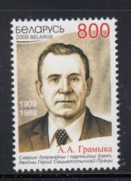 |
| HipStamp | Yugoslavia 1974 Scott 1201 used - 2.00d, President Josip Broz Tito | Europe - Yugoslavia, General Issue Stamp / HipStamp | 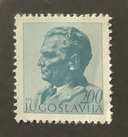 |
| Alamy | INDIA - CIRCA 1964: stamp printed by India, shows Dr. Waldemar M. Haffkine, circa 1964 Stock Photo - Alamy | 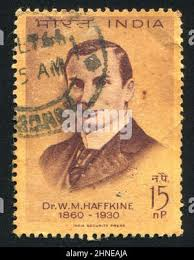 |
| HipStamp | Spain SC#2734 100 Pta King Juan Carlos I (1996) Used | Europe - Spain & Colonies, General Issue Stamp / HipStamp | 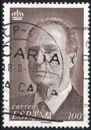 |
| Burda Auction | Postage stamps 1953-1992 / Czechoslovakia 1945-1992 / Philately / Public | Burda Auction | 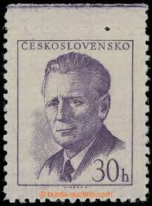 |
| lastdodo.com | Henri Guillaumet (1973) - France - LastDodo | 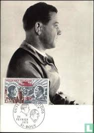 |
| eBay | RUSSIA,USSR:1968 SC#3511 Used CTO Toyvo Antikaynen, Finnish Workers Organizer Q | eBay | 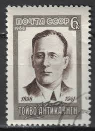 |
| eBay | V005 Bhutan 1972 De Gaulle 3D PLASTIC 1v. MNH | eBay | 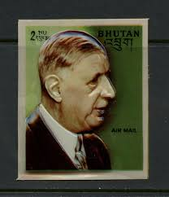 |
| Alamy | Postage stamp from Berlin depicting Balthasar Neumann Stock Photo - Alamy | 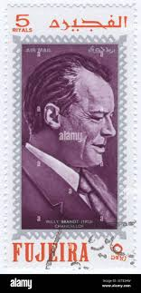 |
| eBay | BELGIUM - 1984 20F KING BAUDOUIN I - FIRST DAY COVER - EXCELLENT CONDITION | eBay | 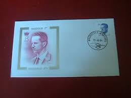 |
| eBay | UPPER VOLTA 435 - King Baudouin of Belgium (pb85418) | eBay | 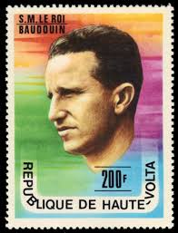 |
| vividagallery.com | Berkes Ferenc Portrait Magyar Posta Shower Curtain by Vivida Gallery - Vivida Gallery | |
| eBay | Russia USSR ☭ 1968 SC 3511 MNH and used . f5392 | eBay | |
| eBay | Ceskoslovensko Stamps 30h 60h | eBay | |
| eBay | SPAIN:1976-77 SC#1976 MNH King Juan Carlos I | eBay | |
| Redbubble | Damn Stamp #2" Sticker for Sale by OmerNaor316 | Redbubble | |
| eBay | Ceskoslovensko Definitive Stamp 1949 Canceled | eBay | |
| Todocolección | yugoslavia 1976** - año 1985 - iglesia de hopov - Buy Antique stamps of Yugoslavia on todocoleccion | |
| Delcampe | Trading Cards - SLAVKO LUSTICA - Yugoslavian vintage football card 1950's * soccer foot fussball calcio futbol futebol voetbal | |
| Dreamstime.com | 165 Stamp King Juan Carlos Spain Stock Photos - Free & Royalty-Free Stock Photos from Dreamstime |